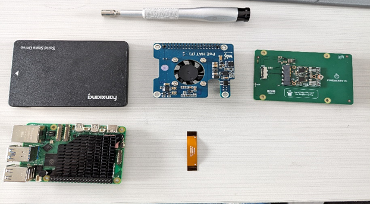
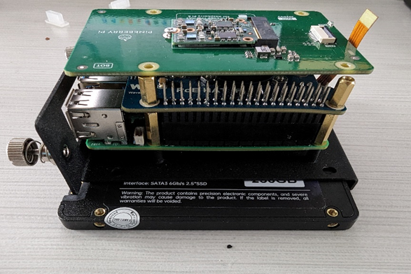
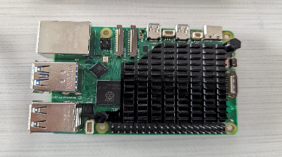

Configure Raspberry Pi 5 with Coral TPU and POE HAT

Date: May 2024 - June 1st
Overview
This guide will help you set up a Raspberry Pi 5 with a Google Coral TPU and a POE HAT for Power over Ethernet (PoE) functionality.
Hardware Requirements
Raspberry Pi 5
- 2.4GHz quad-core 64-bit Arm Cortex-A76 CPU
- Dual 4Kp60 HDMI® display output
- 4Kp60 HEVC decoder
- Dual-band 802.11ac Wi-Fi®, Bluetooth 5.0 / Bluetooth Low Energy (BLE)
- High-speed microSD card interface with SDR104 mode support
- 2 × USB 3.0 ports, supporting simultaneous 5Gbps operation
- 2 × USB 2.0 ports
- Gigabit Ethernet, with PoE+ support
Coral TPU
- Compatibility: Supports the Coral TPU in M.2 format with an E-key interface.
- PCIe x1 Interface Support: Maintains compatibility with PCIe x1 interface, supporting both Gen2 and Gen3 standards.
Additional Hardware
- SSD 256GB
- POE HAT
- Coral TPU HAT
Review
Hardware
  Raspberry Pi 5
- Improved performance with upgraded CPU, GPU, and memory.
- Accelerates machine learning inference tasks on edge devices.
- Enhances efficiency and versatility in AI and IoT applications.
- Performs machine learning tasks with high energy efficiency.
- Ideal for deployment in resource-constrained environments.
- Simplifies development with access to pre-trained models and tools.
- Compatible with TensorFlow Lite framework for easy integration.
POE HAT
- Provides power over Ethernet.
- Includes a cooling system with a metal heatsink.
- Supports 802.3af/at network standard.
Coral TPU HAT
- Google Coral Edge TPU designed for Raspberry Pi 5.
- Coral TPU in M.2 format with E-key interface.
- PCIe x1 interface support, integrable with Raspberry Pi 5 using PCI FPC.
Prerequisites
- Basic Linux commands
- Raspberry Pi 5 with RPi desktop / no desktop OS
- All the hardware mentioned above
Configuration Steps
-
Configure Hardware Settings:
sudo nano /boot/firmware/config.txt [all] # Enable the PCIe External connector. dtparam=pciex1 kernel=kernel8.img # Enable Pineboards Hat Ai dtoverlay=pineboards-hat-ai sudo reboot -
Update Raspberry Pi Kernel and Install Kernel Headers:
Expected output:sudo apt update sudo apt full-upgrade sudo apt install rpi-update sudo rpi-update sudo reboot sudo apt install git bc bison flex libssl-dev make libncurses5-dev sudo wget https://raw.githubusercontent.com/jgartrel/rpi-source/master/rpi-source -O /usr/bin/rpi-source sudo chmod +x /usr/bin/rpi-source rpi-source --tag-update rpi-source --default-config uname -aLinux coralpi 6.6.30-v8+ #1761 SMP PREEMPT Thu May 2 16:54:52 BST 2024 aarch64 GNU/Linux -
Install PCIe Driver and Edge TPU Runtime:
sudo apt update echo "deb https://packages.cloud.google.com/apt coral-edgetpu-stable main" | sudo tee /etc/apt/sources.list.d/coral-edgetpu.list curl https://packages.cloud.google.com/apt/doc/apt-key.gpg | sudo apt-key add - sudo apt-get update curl -sS https://packages.cloud.google.com/apt/doc/apt-key.gpg | gpg --dearmor | sudo tee /usr/share/keyrings/google.gpg echo "deb [signed-by=/usr/share/keyrings/google.gpg] https://packages.cloud.google.com/apt coral-edgetpu-stable main" | sudo tee /etc/apt/sources.list.d/coral-edgetpu.list sudo apt-get update sudo apt-get install cmake libedgetpu1-std devscripts debhelper dkms dh-dkms -
Install Gasket Driver:
git clone https://github.com/google/gasket-driver.git cd gasket-driver sudo debuild -us -uc -tc -b cd .. sudo dpkg -i gasket-dkms_1.0-18_all.deb -
Set Up udev Rule:
sudo sh -c "echo 'SUBSYSTEM==\"apex\", MODE=\"0660\", GROUP=\"apex\"' >> /etc/udev/rules.d/65-apex.rules" sudo groupadd apex sudo adduser $USER apex sudo reboot -
Verify Driver and Device:
sudo lspci -v ls /dev/apex_0 -
Install Docker:
sudo apt install ca-certificates curl gnupg sudo install -m 0755 -d /etc/apt/keyrings curl -fsSL https://download.docker.com/linux/debian/gpg | sudo gpg --dearmor -o /etc/apt/keyrings/docker.gpg sudo chmod a+r /etc/apt/keyrings/docker.gpg echo "deb [arch=\"\$(dpkg --print-architecture)\" signed-by=/etc/apt/keyrings/docker.gpg] https://download.docker.com/linux/debian \$(. /etc/os-release && echo \"\$VERSION_CODENAME\") stable" | sudo tee /etc/apt/sources.list.d/docker.list > /dev/null sudo apt update sudo apt install docker-ce docker-ce-cli containerd.io docker-buildx-plugin docker-compose-plugin -
Build a Docker Image for Coral Testing:
Create a Dockerfile: FROM debian:10 WORKDIR /home ENV HOME /home RUN cd ~ \ && apt-get update \ && apt-get install -y git nano python3-pip python-dev pkg-config wget usbutils curl \ && echo "deb https://packages.cloud.google.com/apt coral-edgetpu-stable main" | tee /etc/apt/sources.list.d/coral-edgetpu.list \ && curl https://packages.cloud.google.com/apt/doc/apt-key.gpg | apt-key add - \ && apt-get update \ && apt-get install -y edgetpu-examples Build the Docker image: sudo docker build -t "coral" . Run the Docker image: sudo docker run -it --device /dev/apex_0:/dev/apex_0 coral /bin/bash In the container, run an Edge TPU example: python3 /usr/share/edgetpu/examples/classify_image.py --model /usr/share/edgetpu/examples/models/mobilenet_v2_1.0_224_inat_bird_quant_edgetpu.tflite --label /usr/share/edgetpu/examples/models/inat_bird_labels.txt --image /usr/share/edgetpu/examples/images/bird.bmp Expected output: Poecile atricapillus (Black-capped Chickadee) Score : 0.44140625 Poecile carolinensis (Carolina Chickadee) Score : 0.29296875